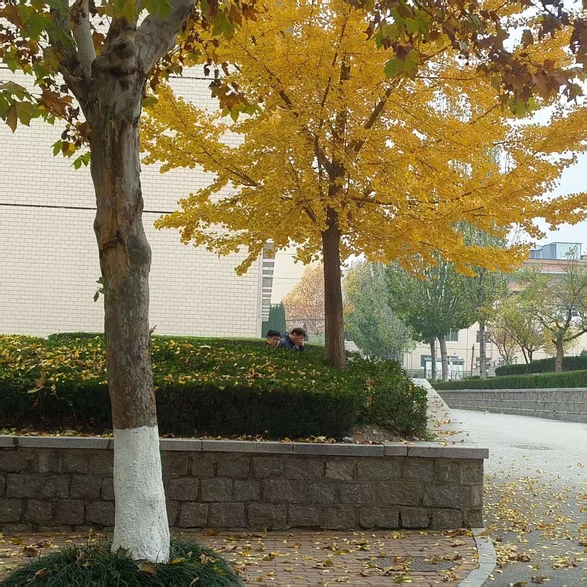
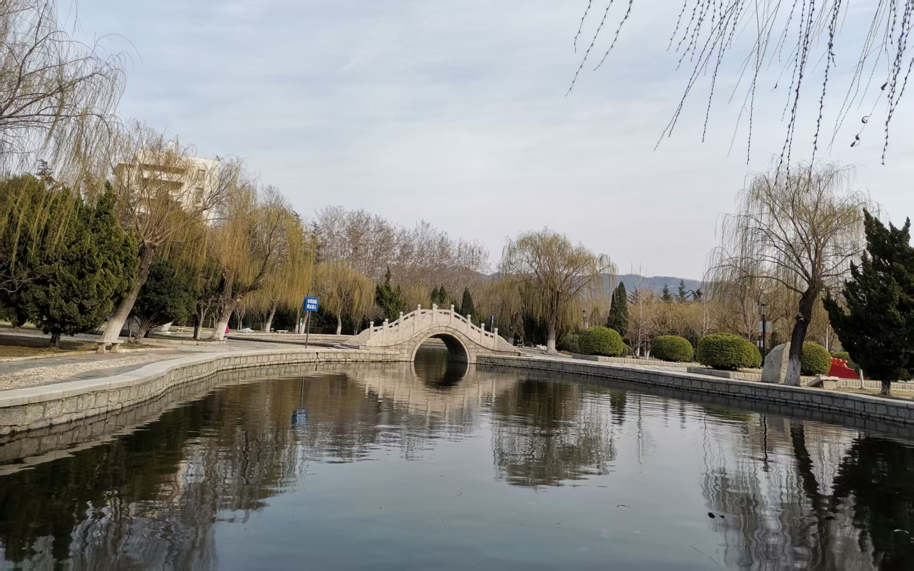

自然风光
当秋风拂过校园的每一个角落，整个校园仿佛被一位技艺精湛的画家用金色的画笔重新描绘。清晨，当一缕阳光穿过薄雾，洒在铺满落叶的小径上，那金黄色的光芒与地面上层层叠叠的落叶相互辉映，构成了一幅绝美的秋日画卷。
人文景观
校园的人文景观与自然风光相得益彰，共同构成了独特的校园文化。在秋日的映衬下，这些人文景观更显得韵味十足。乳子湖便是鲁东大学北校区人文景观的代表。它湖水清澈，绿树环绕，与校内博物馆相映成趣。
秋日感悟
“自古逢秋悲寂寥，我言秋日胜春朝”。秋天是一个值得沉思的季节，他的到来意味着收获，收获则意味着农民们一年的忙碌有了回报，生活也更加有了盼头。同时，当树叶从枝头飘落，也代表着生命的轮回与时间的流逝。